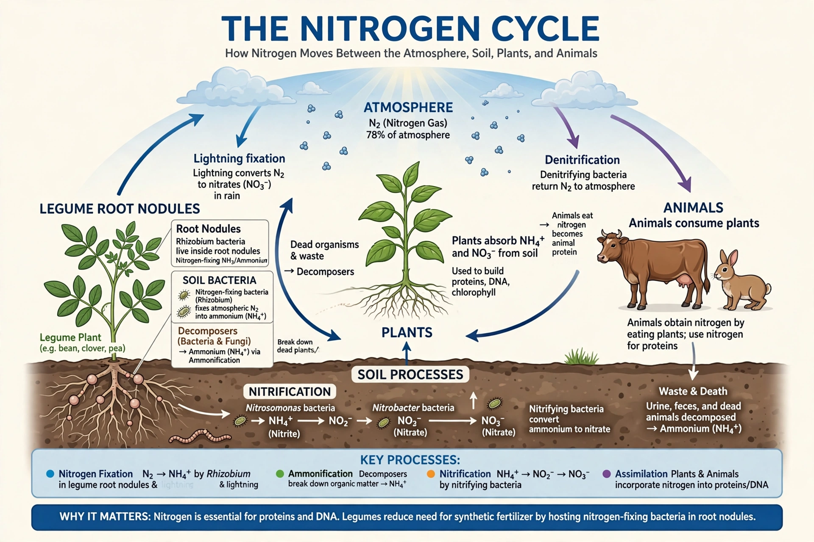
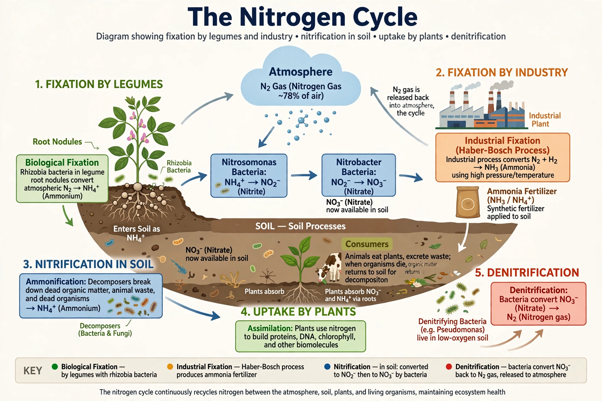

Nitrogen cycle


The nitrogen cycle is the biogeochemical cycle by which nitrogen moves among the atmosphere, soils, waters and living things. Nitrogen is essential to all life — it is a core ingredient of proteins and DNA — yet the vast atmospheric reservoir of N₂ gas is unusable by most organisms until it is 'fixed' into reactive forms.
Humanity now fixes roughly as much nitrogen as all natural terrestrial processes combined, one of the largest single alterations of a planetary cycle.
Steps of the cycle
Nitrogen fixation by specialised bacteria and archaea (in soil, root nodules of legumes, and the ocean) converts N₂ into ammonia; lightning fixes a small additional amount. Nitrification converts ammonia to nitrite and nitrate, the forms most plants absorb. Animals obtain nitrogen by eating; death, excretion and decay return it to the soil as ammonium (ammonification), and denitrifying bacteria finally convert nitrate back to N₂, closing the loop.
Human perturbation
The Haber–Bosch process, industrialised in the early 20th century, converts atmospheric nitrogen into ammonia fertiliser on a massive scale and is credited with feeding roughly half of humanity. But reactive nitrogen leaks at every stage: nitrate pollutes groundwater and drives the eutrophication behind coastal dead zones (see Water pollution), nitrous oxide is a potent Greenhouse gas, and nitrogen deposition reshapes species-poor ecosystems worldwide.
Scientists list the nitrogen cycle among the planetary boundaries most transgressed by human activity. Compare the Carbon cycle and Water cycle.
See also: Carbon cycle · Water cycle · Water pollution · Soil · Ecosystem